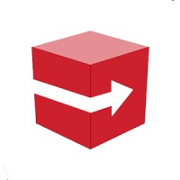
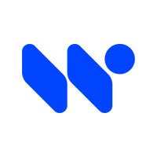
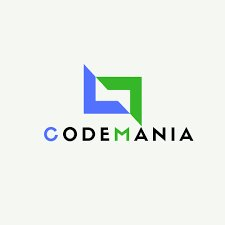
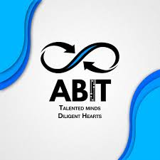

Data Analyst · NYU Stern School of Business
MS Management of Technology · NYU Tandon '27
I'm a Data Analyst at NYU Stern School of Business building ELT pipelines, KPI dashboards, and stakeholder reports on real institutional data. Currently pursuing my MS in Management of Technology at NYU Tandon (2025–2027).
My background spans a published ML research paper, a software engineering role at Speedbox, and a prior DA internship — all before grad school. I bridge the gap between technical depth and business communication.
Targeting roles in Data Analytics, Business Intelligence, and Business Analysis — finance, tech, or consulting in NYC.
Building ELT pipelines and KPI dashboards on institutional data. Delivering stakeholder reports that inform strategic decisions. Real production data, real accountability.

Built and maintained white-labelled SaaS platforms. Improved backend infrastructure, optimized performance, and shipped features in Agile sprints.

Cleaned and analyzed large datasets with Python and Excel. Built Tableau dashboards visualizing key metrics. Data models that improved operational efficiency by 15%.
Python/Streamlit app that compares resumes against job descriptions using TF-IDF vectorization and cosine similarity via spaCy NLP. Outputs match percentage for efficient screening.
Command-line chatbot in C using string matching, file handling, and conditional logic to simulate conversation. Demonstrates low-level systems programming fundamentals.
Conducted and organized state-wide hackathons, overseeing event logistics, judging innovative projects, and fostering tech collaboration across Maharashtra.

Built innovative solutions to real-world problems under time pressure. Collaborated with a team, rapidly learned new tech, and showcased end-to-end problem solving.
Developed a deep learning-based system leveraging CNNs and spectrogram analysis to extract and analyze music features for automated genre classification, mood detection, and recommendation. Improved retrieval accuracy through architectural optimization of convolutional layers trained on audio feature representations.

Managed and organized college events, leading cross-functional coordination and ensuring smooth execution of functions.
Represented countries in simulated international forums, drafting resolutions and developing diplomatic negotiation skills.
Beach cleanups, food drives, and social initiatives focused on environmental sustainability and community welfare.
Open to internship and full-time conversations in Data Analytics, BI, and Business Analysis — NYC or remote.